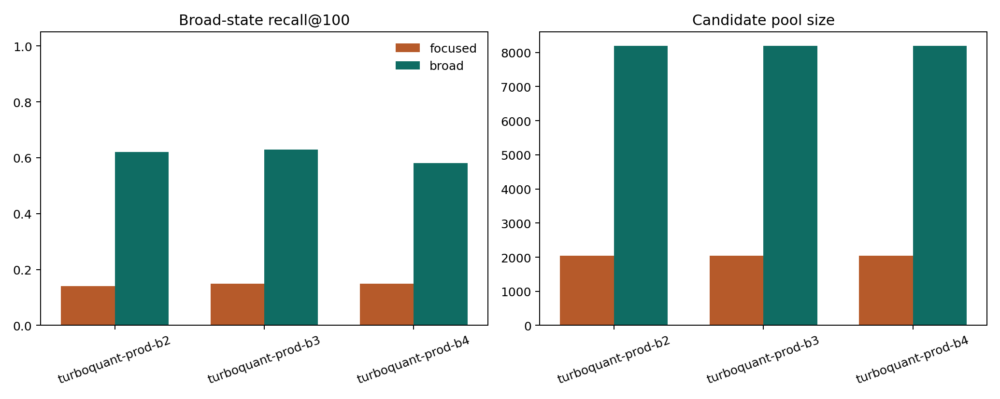

Tutorials
Broad-state tuning changes TurboQuant from failing badly to being competitive.
Executed article showing how broader planning changes the `IPF alveolar macrophage` query.

Detailed outputs live in artifacts/scenario_articles/broad_state_tuning_summary.csv.